Our team was commissioned to design sanitaryware for 'WhiteVille', a prominent company in the industry. The competition was held between several universities and evaluated by a panel of three judges, with the final decision resting in the hands of the boss. Working as a cohesive unit of three, we set out to design a suite of products, including a new sink basin, a modern toilet, and a storage shelf complete with an integrated cupboard.
Software Used:
Solidworks
Keyshot
Adobe Ps, Ai, Ae, Id, Pr
Blender
Sketchpad
MS Office
During our research, we came across the renowned Italian architect, Massimo Iosa Ghini, whose work captivated us. We were particularly impressed by his ability to push the boundaries of modern design, creating forms that were not only aesthetically pleasing but also challenged conventional thinking. His influence was apparent in our final designs, as we incorporated touches of his signature style. Below is an example of his remarkable work:
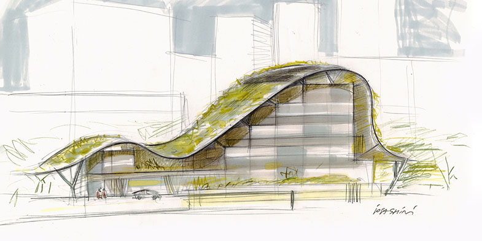At this point, we knew that we were designing a toilet and a sink basin with accompanying furniture. Our breadth of experimentation lay between something that could be considered already a part of WhiteVille's collection, to something that wildly contradicts a lot of their current work.
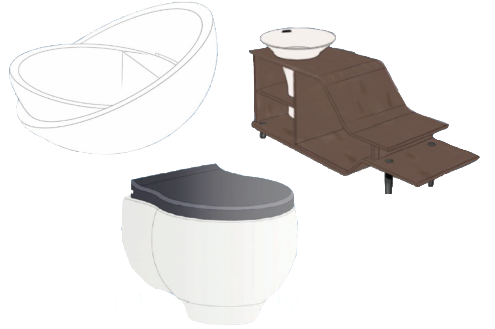To identify the strongest concepts for deeper experimentation, we utilized a range of matrices. Using CAD, we created simple models from our sketches and rendered them quickly to gain a better understanding of our designs and potential areas for improvement. We were still in the process of determining the features that our designs would incorporate, including deciding between open shelving, cupboard doors, or shelves on runners.
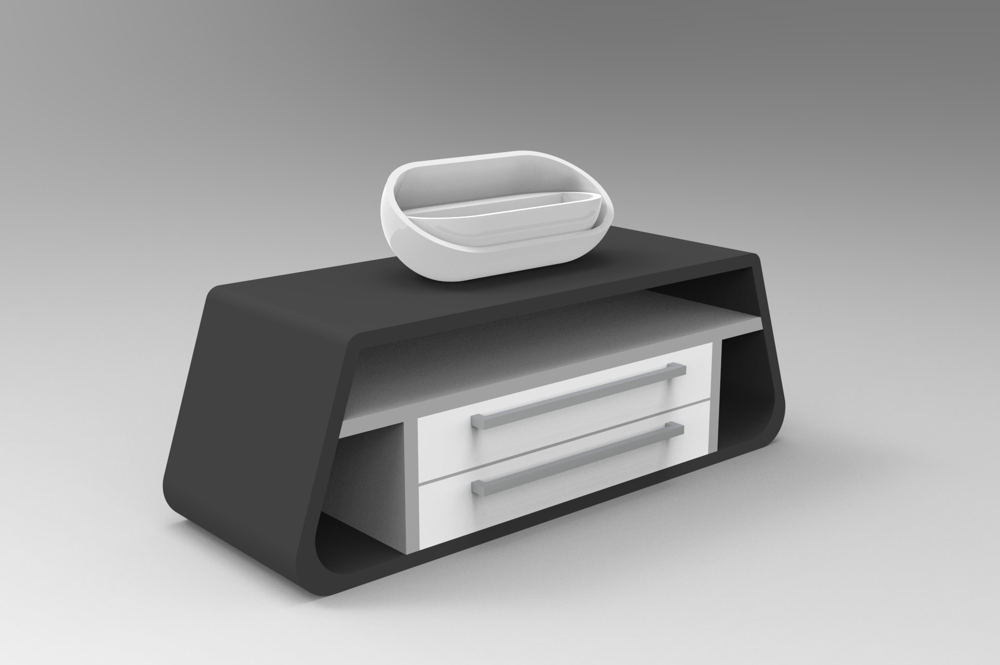 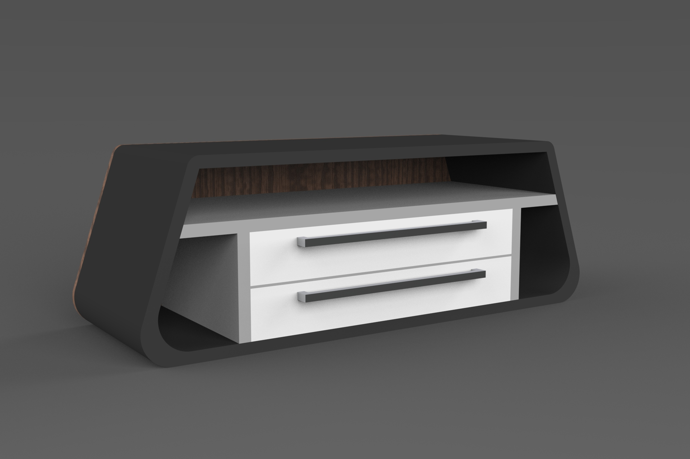 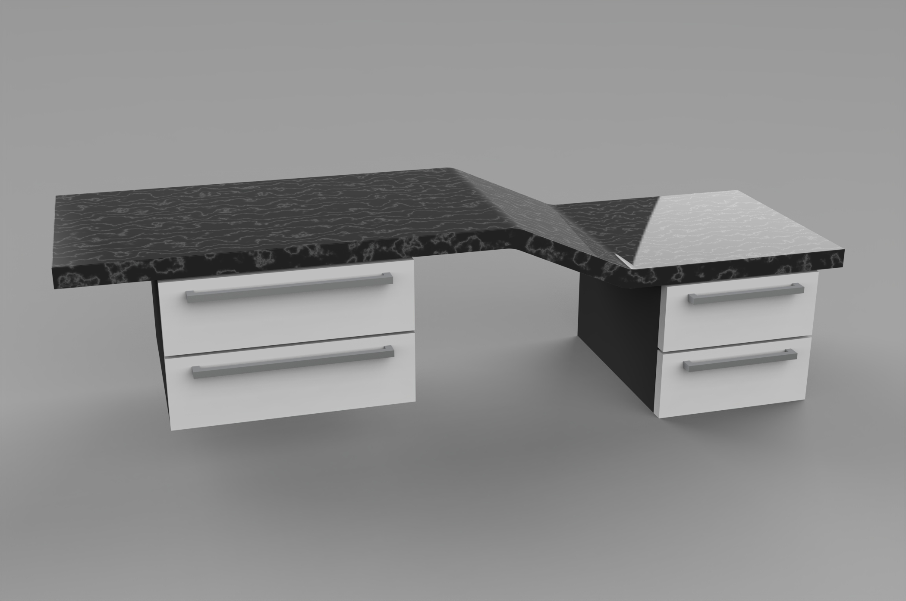 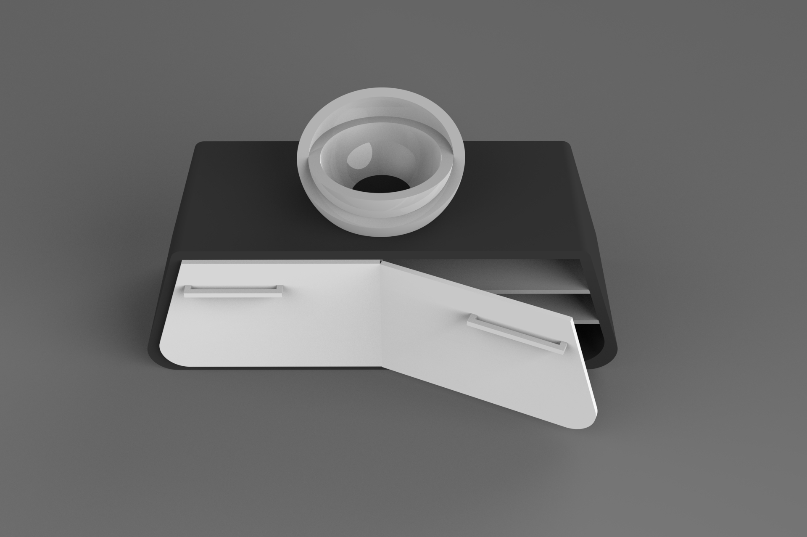Our team utilized an additional set of matrices to identify the most promising concepts among all the ideas generated. As a result, our designs gained greater definition and clarity. We then proceeded to briefly model these concepts using CAD, with the aim of achieving the same level of detail and understanding as our previous iterations.
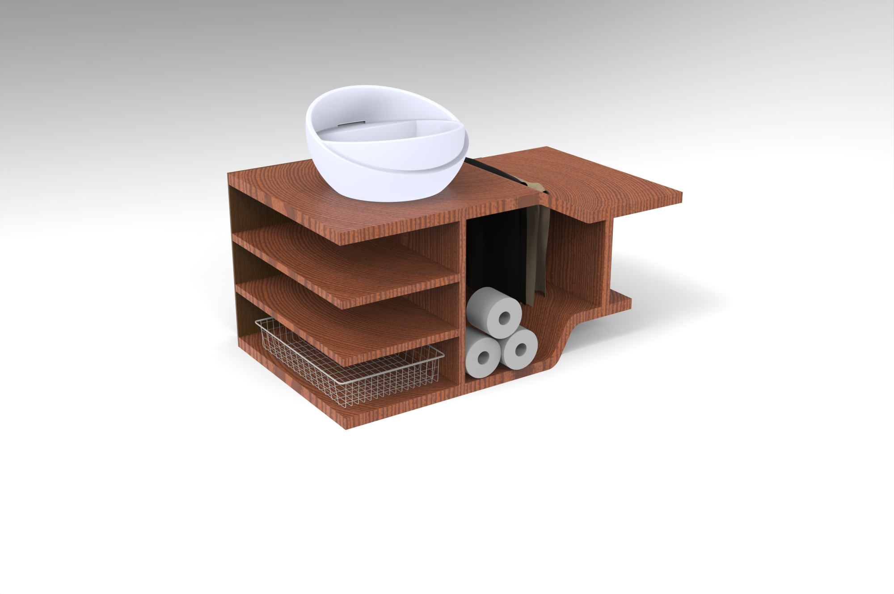 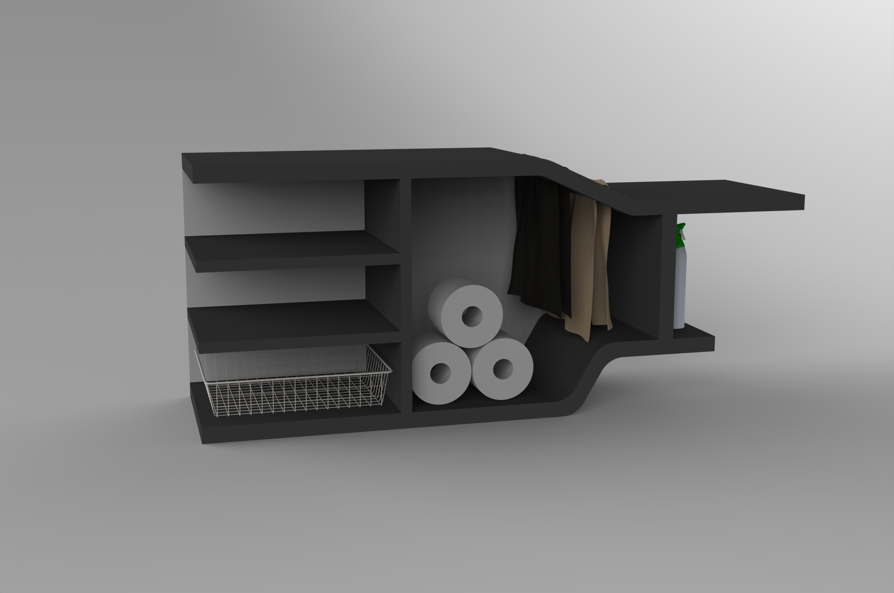During the finalization stage, we presented a range of material, color, and finish options with slight modifications to form and function where deemed necessary. We were particularly drawn to the 'terrazzo' and 'minimalist' styles, as we felt that they best suited our project's objectives and had the highest degree of 'Whitevilleness'.
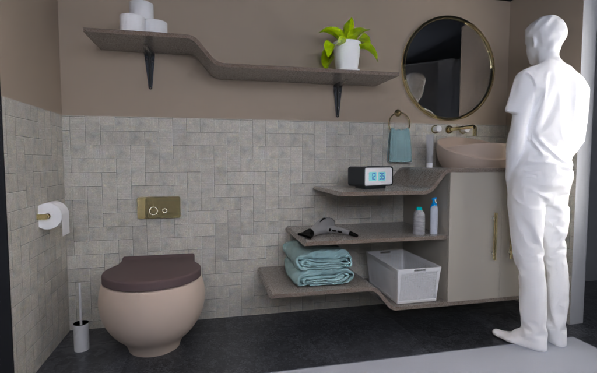 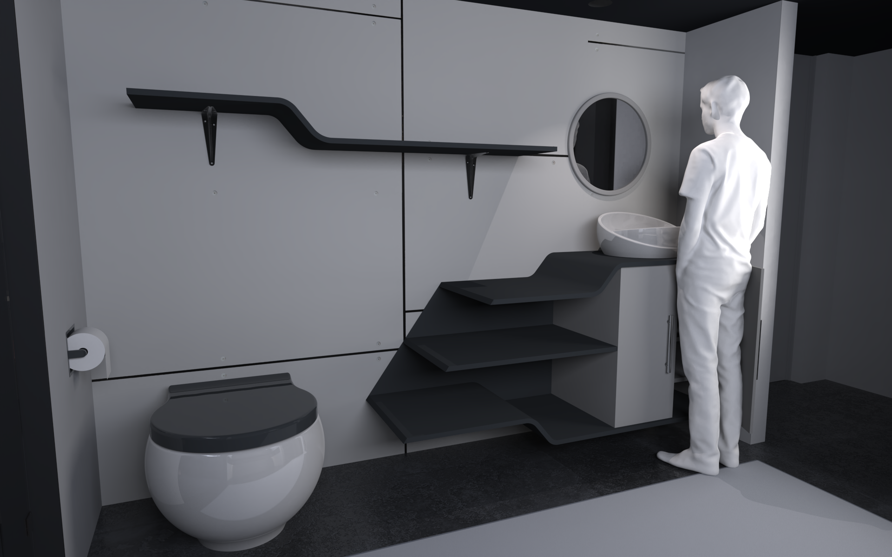 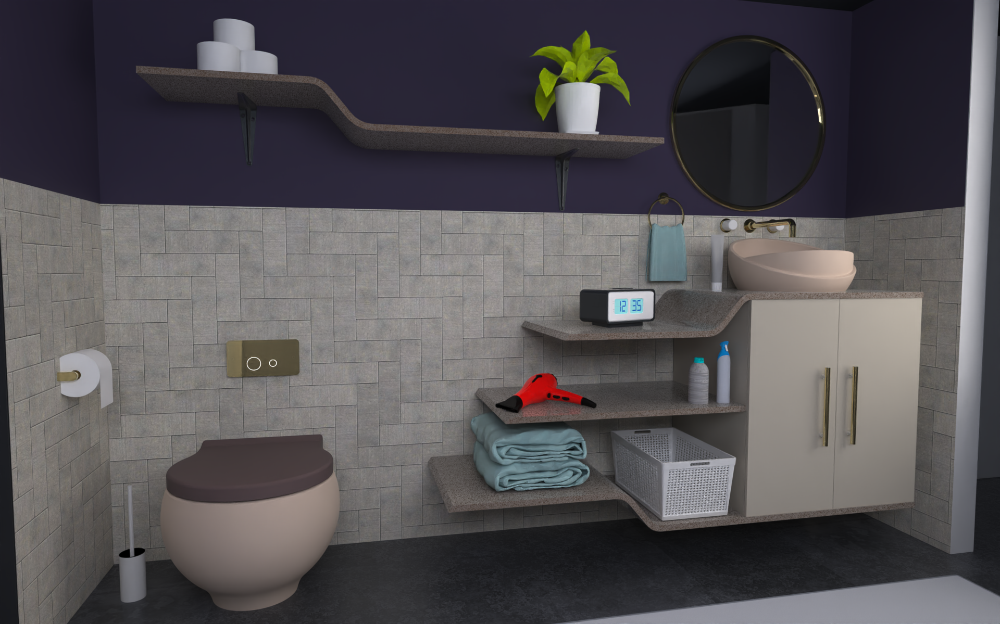After careful evaluation, WhiteVille awarded our team first place for our exceptional designs. We are thrilled to present the final proposed designs in all their detail and beauty. Please enjoy this stunning close-up shot.
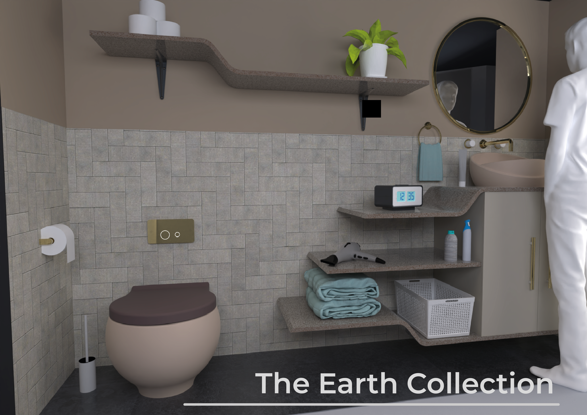